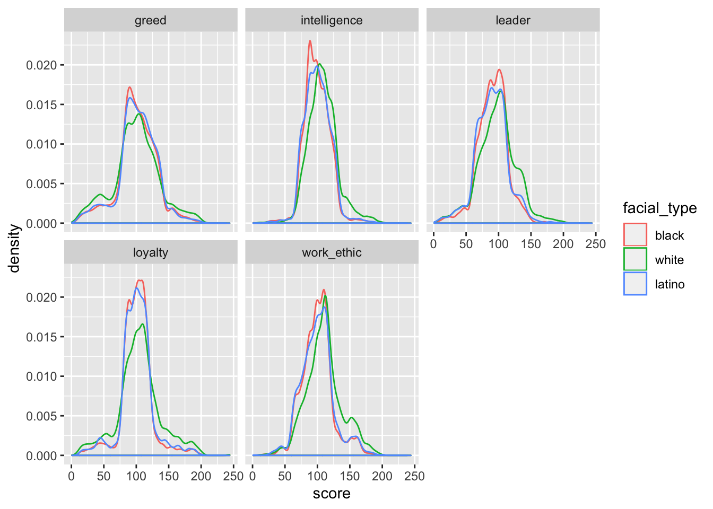

Last updated: 2020-06-04
Checks: 6 0
Knit directory: OOTP/
This reproducible R Markdown analysis was created with workflowr (version 1.2.0). The Report tab describes the reproducibility checks that were applied when the results were created. The Past versions tab lists the development history.
Great! Since the R Markdown file has been committed to the Git repository, you know the exact version of the code that produced these results.
Great job! The global environment was empty. Objects defined in the global environment can affect the analysis in your R Markdown file in unknown ways. For reproduciblity it’s best to always run the code in an empty environment.
The command set.seed(20200604) was run prior to running the code in the R Markdown file. Setting a seed ensures that any results that rely on randomness, e.g. subsampling or permutations, are reproducible.
Great job! Recording the operating system, R version, and package versions is critical for reproducibility.
Nice! There were no cached chunks for this analysis, so you can be confident that you successfully produced the results during this run.
Great! You are using Git for version control. Tracking code development and connecting the code version to the results is critical for reproducibility. The version displayed above was the version of the Git repository at the time these results were generated.
Note that you need to be careful to ensure that all relevant files for the analysis have been committed to Git prior to generating the results (you can use wflow_publish or wflow_git_commit). workflowr only checks the R Markdown file, but you know if there are other scripts or data files that it depends on. Below is the status of the Git repository when the results were generated:
Ignored files:
Ignored: .Rhistory
Ignored: .Rproj.user/
Ignored: docs/figure/
Untracked files:
Untracked: data/players.csv
Note that any generated files, e.g. HTML, png, CSS, etc., are not included in this status report because it is ok for generated content to have uncommitted changes.
These are the previous versions of the R Markdown and HTML files. If you’ve configured a remote Git repository (see ?wflow_git_remote), click on the hyperlinks in the table below to view them.
| File | Version | Author | Date | Message |
|---|---|---|---|---|
| Rmd | e7df3c7 | Jason Willwerscheid | 2020-06-04 | wflow_publish(“analysis/race.Rmd”) |
suppressMessages(players <- readr::read_csv("data/players.csv"))
players <- players %>%
select(last_name = LastName, first_name = FirstName,
nation = Nation, facial_type,
greed, loyalty, work_ethic, intelligence, leader = `leader ability`,
ml_service = `ML Service`)
players <- players %>% mutate(facial_type = as.factor(facial_type))In the OOTP database, race is most immediately coded as “facial type.” This variable is primarily used, I think, to create players’ “facegens” (profile pictures). From inspection, level 1 appears to correspond to Black (including Black Latino), 2 to East Asian, 3 to Pacific Islander, 4 to White, and 5 to Latino. In general, the labels are pretty noisy. For example, Kolten Wong is coded as White while his brother Kean is coded as East Asian. Overall, there are very few players coded as East Asian and even fewer as Pacific Islander, so I filter them out for the purposes of this analysis.
players <- players %>%
filter(facial_type %in% c(1, 4, 5)) %>%
mutate(facial_type = droplevels(fct_recode(facial_type, black = "1", white = "4", latino = "5")))I’ll focus on the five personality traits that have the most visible effects within the game: greed, loyalty, work ethic, intelligence, and leadership. Behind the scenes, each of these is scored on a scale from 0 to 200.
I plot density histograms for each trait below. It seems clear that a larger proportion of Whites have high scores for intelligence, work ethic, leadership, and loyalty.
df <- players %>%
gather(key = "trait", value = "score", greed:leader)
ggplot(df, aes(x = score, col = facial_type)) + geom_density() + facet_wrap(~trait)
These visual impressions are supported by significance tests. I do a very simple test in which I aggregate Blacks and Latinos and do a two-sample \(t\)-test to check whether Whites are systemically given higher scores for loyalty, work ethic, intelligence, and leadership, as well as lower scores for greed (in OOTP, a low greed score is more desirable). Below, the \(p\)-value gives the probability of seeing a difference in means that’s at least as large as the observed difference: the lower the \(p\)-value, the more statistically significant the difference. For all traits but greed, the \(p\)-value is extremely small. It’s almost impossible for the observed discrepancies to have come about by chance.
# Flip greed to make higher scores better:
for (trait in c("greed", "loyalty", "work_ethic", "intelligence", "leader")) {
alternative <- ifelse(trait == "greed", "less", "greater")
test <- t.test(players %>% filter(facial_type == "white") %>% pull(trait),
players %>% filter(facial_type != "white") %>% pull(trait),
alternative = alternative)
cat("Trait: ", trait, "\n")
cat("Mean (white): ", test$estimate[1], "\n")
cat("Mean (non-white):", test$estimate[2], "\n")
cat("t-test p-value: ", test$p.value, "\n\n")
}#> Trait: greed
#> Mean (white): 99.58174
#> Mean (non-white): 101.0101
#> t-test p-value: 0.02777982
#>
#> Trait: loyalty
#> Mean (white): 104.686
#> Mean (non-white): 100.9158
#> t-test p-value: 1.135191e-08
#>
#> Trait: work_ethic
#> Mean (white): 110.3977
#> Mean (non-white): 100.1879
#> t-test p-value: 9.00515e-67
#>
#> Trait: intelligence
#> Mean (white): 108.2591
#> Mean (non-white): 99.78683
#> t-test p-value: 3.114258e-69
#>
#> Trait: leader
#> Mean (white): 98.02109
#> Mean (non-white): 90.11094
#> t-test p-value: 2.494802e-39The easiest way to fix this problem is to just randomly generate scores for all personality traits.
A second method shifts and scales within each racial group so that means and standard deviations are identical within groups. This method isn’t perfect. For example, we still get a disproportionate number of Whites who are exceptionally intelligent:
intel_summary <- players %>%
group_by(facial_type) %>%
summarise(intel_mean = mean(intelligence), intel_sd = sd(intelligence))
players <- players %>%
left_join(intel_summary, by = "facial_type") %>%
mutate(adj_intelligence = 100 + 19 * (intelligence - intel_mean) / intel_sd)
ggplot(players, aes(x = adj_intelligence, col = facial_type)) + geom_density()A third method assigns scores based on empirical quantiles so that not only means and standard deviations are the same, but entire distributions. Here I match the empirical quantiles with normal distributions, but any distribution would do. Here’s how the scores adjusted using this method compare to the original scores:
players <- players %>%
group_by(facial_type) %>%
mutate(adj_intelligence = qnorm(rank(intelligence) / (n() + 1), mean = 100, sd = 20))
ggplot(players, aes(x = intelligence, y = adj_intelligence, col = facial_type)) +
geom_point() +
geom_abline(slope = 1)Using a normal distribution loses information at the extremes, so a heavier-tailed distribution like a \(t\) might be preferred. Some trial and error is needed to get it right. A \(t\) distribution with 10 degrees of freedom gives good results:
players <- players %>%
group_by(facial_type) %>%
mutate(adj_intelligence = 100 + 20 * qt(rank(intelligence) / (n() + 1), df = 10))
ggplot(players, aes(x = intelligence, y = adj_intelligence, col = facial_type)) +
geom_point() +
geom_abline(slope = 1)
sessionInfo()#> R version 3.5.3 (2019-03-11)
#> Platform: x86_64-apple-darwin15.6.0 (64-bit)
#> Running under: macOS Mojave 10.14.6
#>
#> Matrix products: default
#> BLAS: /Library/Frameworks/R.framework/Versions/3.5/Resources/lib/libRblas.0.dylib
#> LAPACK: /Library/Frameworks/R.framework/Versions/3.5/Resources/lib/libRlapack.dylib
#>
#> locale:
#> [1] en_US.UTF-8/en_US.UTF-8/en_US.UTF-8/C/en_US.UTF-8/en_US.UTF-8
#>
#> attached base packages:
#> [1] stats graphics grDevices utils datasets methods base
#>
#> other attached packages:
#> [1] forcats_0.4.0 stringr_1.4.0 dplyr_0.8.0.1 purrr_0.3.2
#> [5] readr_1.3.1 tidyr_0.8.3 tibble_2.1.1 ggplot2_3.2.0
#> [9] tidyverse_1.2.1
#>
#> loaded via a namespace (and not attached):
#> [1] Rcpp_1.0.4.6 cellranger_1.1.0 pillar_1.3.1 compiler_3.5.3
#> [5] git2r_0.25.2 workflowr_1.2.0 tools_3.5.3 digest_0.6.18
#> [9] lubridate_1.7.4 jsonlite_1.6 evaluate_0.13 nlme_3.1-137
#> [13] gtable_0.3.0 lattice_0.20-38 pkgconfig_2.0.2 rlang_0.4.2
#> [17] cli_1.1.0 rstudioapi_0.10 yaml_2.2.0 haven_2.1.1
#> [21] xfun_0.6 withr_2.1.2 xml2_1.2.0 httr_1.4.0
#> [25] knitr_1.22 hms_0.4.2 generics_0.0.2 fs_1.2.7
#> [29] rprojroot_1.3-2 grid_3.5.3 tidyselect_0.2.5 glue_1.3.1
#> [33] R6_2.4.0 readxl_1.3.1 rmarkdown_1.12 modelr_0.1.5
#> [37] magrittr_1.5 whisker_0.3-2 backports_1.1.3 scales_1.0.0
#> [41] htmltools_0.3.6 rvest_0.3.4 assertthat_0.2.1 colorspace_1.4-1
#> [45] labeling_0.3 stringi_1.4.3 lazyeval_0.2.2 munsell_0.5.0
#> [49] broom_0.5.1 crayon_1.3.4